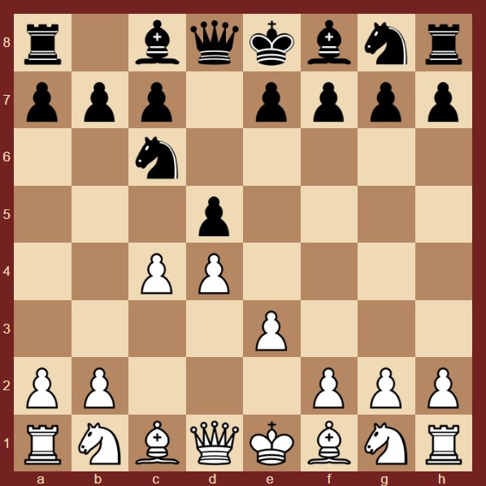

Защита Чигорина

Защита Чигорина - Дебют,введенный в турнирую практику ВНЕЗАПНО Михаилом Ивановичем Чигориным. Нарушает традиционную для дебютов ферзевой
Назад На главную
пешки идею продвижения пешки с перед конем. За что сейчас и позабыт. Впрочем, в те времена, когда компьютеры еще не могли тягаться на равных
с людьми, он был для некоторых шахматистов настоящим секретным оружием, опаснее всего этот дебют был в руках великого оригинала Александра
Морозевича - никто не знал, как играть!